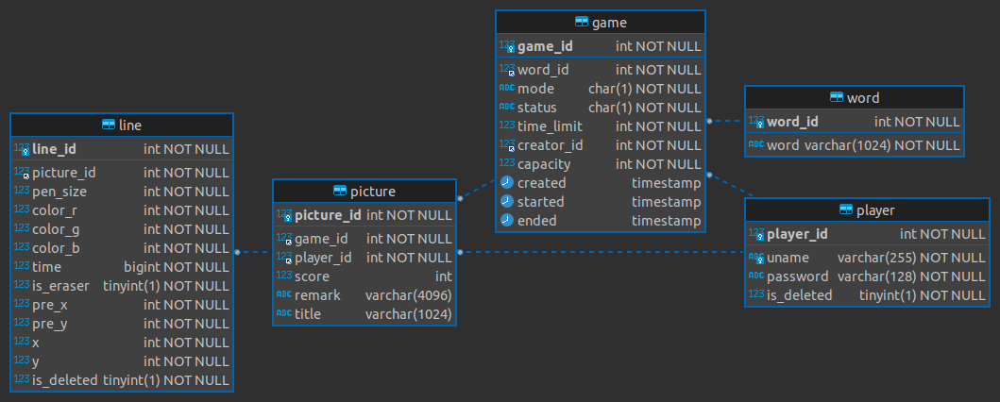
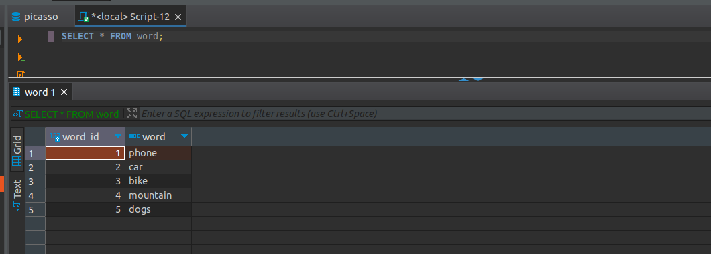
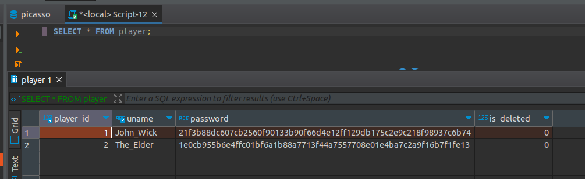
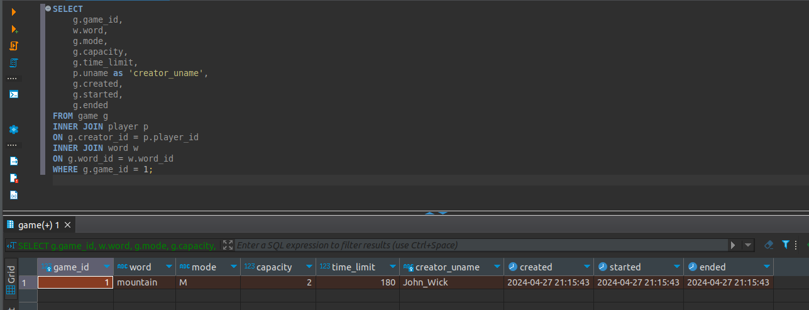
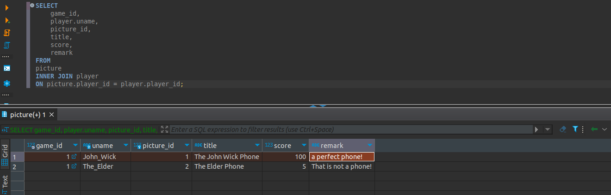
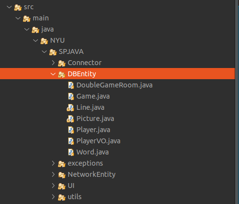
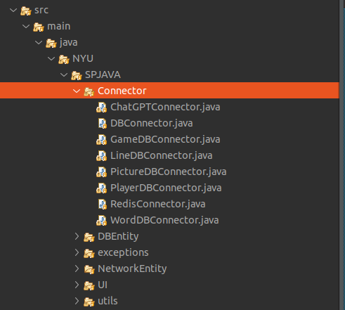
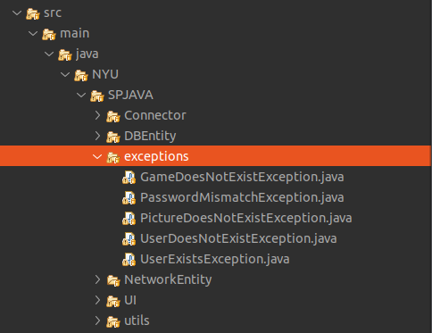
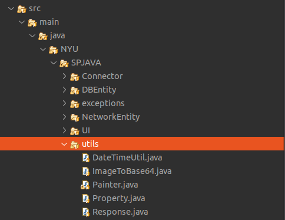
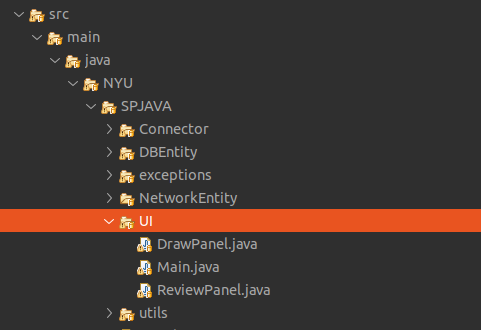

Java Final Project: Picasso
Date: May 5, 2024 Author: Rafik Saad, Shunyu Yao
Picasso Documentation
This document will explain how to setup and run Picasso locally and will also explain the overall design of the game
What is picasso?
Picasso is an AI powered drawing game. Players are given a blank canvas and a random scene to draw. The drawings are then graded by ChatGPT4. It supports both single and dual game modes, and provides additional features such as replaying drawings.
In dual game mode, a player can send a challenge to another player for a showdown. Whoever scores higher, wins.
Environment Setup
To run picasso locally, you'll need the following prerequisites:
- Mysql server locally installed (used as a back-end for the game)
- Redis locally installed (high-performance in memory databases for coordinating multiplayer games)
- ChatGPT4 API key (used for scoring your final drawing by ChatGPT)
clone the picasso github repo
git clone https://github.com/Jas000n/SP2024_CS9053_JAVA
- go to file conf.properties and fill in these fields with your own information:
- database.user="YOUR MYSQL USERNAME"
- database.password="YOUR MYSQL PASSWORD"
- chatgpt.api.key="YOUR API KEY"
- Execute the following scripts to setup your back-end:
- script #1: CreateAllTables.sql This creates the picasso database and sets up all the backend tables and relationships
- script #2: addWords.sql This script populates the words table with few words for playing
That's it, now you're ready to play, simply run Main.java
Game Demo
Download the game demo video here to see the game in action!
As shown in the demo video, a player first registers and logs in. In case of single-game, the player is given a random word to draw. As the player draws, all the strokes are captured and stored in the back-end to provide the replay/repaint feature. Once the game ends, the canvas is turned into an image and sent to ChatGPT4 for scoring. ChatGPT4 returns both a score and a remark which are displayed to the user. These information are also written to the back-end for storage.
for dual game mode, some coordination between java clients need to happen for a player to be able to issue a game challenge to another player and to view the list of online players. for performance and scalability, this coordination is not handled by the back-end, instead it's handled by Redis, a high performance in-memory database.
The next sections will go over the overall design in more details.
Backend Design Overview
After running the CreateAllTables script above, your back-end should look like this:

Figure 1: Picasso ERD Diagram
a game consists of a word chosen at random from the word table and is created by a player whose player_id is saved as the creator_id, therefore a game is made of a (word_id, creator_id) combination.
Each (game_id, player_id) combination makes up a picture_id, and each picture is a collection of lines saved in the lines table.
See the createAllTable DDL script for more details on each of the fields above. For convenience, here is DDL piece for the game table, note the comments on each field
CREATE TABLE game
(
game_id INT NOT NULL PRIMARY KEY AUTO_INCREMENT comment 'unique identifier for a game',
word_id INT NOT NULL comment 'the scene for this game',
mode CHAR(1) NOT NULL DEFAULT 'S' comment 'game mode: S: Single, M: Multi-player via waiting room, C: 2 players via challenge/invite',
status CHAR(1) NOT NULL DEFAULT 'N' comment 'game status: N: New, A: Active, D: Done',
time_limit INT NOT NULL DEFAULT 180 comment 'time limit in seconds',
creator_id INT NOT NULL comment 'the player id that created this game',
capacity INT NOT NULL DEFAULT 1 comment 'number of players participated in this game',
created TIMESTAMP DEFAULT CURRENT_TIMESTAMP comment 'datetime this game was created',
started TIMESTAMP comment 'datetime this game started (when moved to Active)',
ended TIMESTAMP comment 'datetime this game ended'
);
ALTER TABLE game ADD CONSTRAINT game_word_fk FOREIGN KEY (word_id) REFERENCES word (word_id);
ALTER TABLE game ADD CONSTRAINT game_player_fk FOREIGN KEY (creator_id) REFERENCES player (player_id);
-- add check constrain on mode and status values to limit choices
ALTER TABLE game ADD CONSTRAINT game_mode_check CHECK ( mode IN ('S', 'M'));
ALTER TABLE game ADD CONSTRAINT game_status_check CHECK (status IN ('N', 'A', 'D'));
-- the game table setup allows a player to attempt the same word multiple times
-- mode and status are CHAR(1) instead of a bit to add more flexibility
Note that all the primary keys in the database are set to AUTO_INCREMENT, meaning, ids are automatically (and more importantly atomically) chose by the DB, not Java. This guarantees ACID transactions and minimizes the risk that two Java clients would create the same game id.
The Word Table
The words tables contains scenes for drawing, a scene is chosen at random for each game
Here is a sample table with few words/scenes:

Figure 2: Picasso Word Table
The Player Table
When players register, their information is stored here. The password is hashed using Sha256 algorithm
Here is a sample with two registered players

Figure 3: Picasso Player Table
The Game table
Once a player creates a game, it's saved in the game table, here is a sample game created by the player: John Wick. Note how the SQL joins game and player tables to fetch the username for the creator and the word table for the word.

Figure 4: Picasso Game Table
The Picture table

Figure 5: Picasso Picture Table
The picture table shows all the drawings associated with a game. It also shows all the players who are in the same game.
For example, here is game_id 1 that was created earlier by player: John_Wick It has two players: John_Wick himself and The_Elder, each player drew a picture and got a score and a remark from ChatGPT4. The players can optionally title their drawings.
Code Overview
DBEntity Folder

Figure 6: Picasso DB Entities Folder
Each back-end table in MySQL has a corresponding Java class that maps the SQL fields to Java fields. For example, Game.java will map very closely to the game table in the back-end and so on.
Game, Line, Picture, Player and Word are MySQL entities, while PlayerVO and DoubleGameRoom are Redis entities.
Connector

Figure 7: Picasso Connectors
Each entity has a corresponding connector in the Connector folder that handles the read/write operations from and to the DB.
As mentioned before, to minimize race conditions on the back-end, all the primary keys (game_id, player_id, etc.) are automatically chosen by the DB instead of the java client. That means, when a java object is first created, its id is set to null until written to the DB. Once it's written in the DB, the DB connector will return a new instance of that object with the missing fields populated.
For example, when a game is created, a Game object is first created by a player but its game_id is initially null. It's then passed to the createDBGame method in GameDBConnector.java which writes the game to the game table and returns a new instance of Game with game_id populated. This is generally true for all DB Entities and Connectors.
Another important note for connectors is that all public methods return a Response instance, the class Response.java lives in the utils folder and is described in the following section.
Response.java
A very important class is the Response.java class in the utils folder. For flexibility, the back-end is designed independently from the front-end. The back-end provides a public API that returns a consistent response in the form of a Response object for all its DB operations.
Regardless of success or failure of an operation, a response is always returned, the caller then needs to inspect the response code to check for Success or failure. If a data is returned, it's put in the Response.data field, likewise, in case of failures, an exception is put in the Response.ex field.
This makes the design very flexible since we can add any UI for this game without changing any of the back-end API. Additionally, all calls to the back-end return uniform responses.
Here are the fields expected in a back-end response:
public class Response {
public ResponseCode code; // an enum, set to either ResponseCode.SUCESS in case of success or ResponseCode.FAILED in case of failure
public String msg; // a descriptive message with more details on the success or failure
public Exception ex; // Exception instance in case of failure. It can then be used to re-throw or print error stack, if operation succeeded, this is set to null
public Object data; // for DB operations that return data (i.e. SELECT statements), the data field is populated in case of SUCCESS and is set to null in case of FAILUER
Let's look at few code samples to show how to use a returned Response and how connectors return a response
Here is a code snippet to register a new player
// create a new instance of a player.
// at this point, this only exists locally
Player player = new Player("John_Wick", "I am back!"); // the password is hashed and player_id is initially null
// create an instance of PlayerDBConnector to interact with the back-end
PlayerDBConnector pc = new PlayerDBConnector();
// write this player to the back-end player table, i.e., register
Response resp = pc.register(player);
if (resp.code != ResponseCode.SUCCESS) { // DB failed to register player
resp.ex.printStackTrace(); // print the stack trace for the ex field of the response
} else {
player = (Player) resp.data; // get the new instance of Player with player_id populated by the db
}
Here is the definition of the register method in GameDBConnector which demonstrates some of the custom exceptions that can be found in the ex field of the response Note that register method shows samples for one SUCCESS response and three FAILURE responses.
public Response register(Player player) {
try {
// first check if user exists
Player p = getUser(player);
throw new UserExistsException(null); // An existing user tries to registers. Handle in the catch
} catch (PasswordMismatchException | UserExistsException ex) {
// user exists
String msg = String.format("User %s already exists!", player.getUname());
return new Response(ResponseCode.FAILED, msg, new UserExistsException(msg), null); // a FALIURE response, note data is set to null and ex is populated
} catch (UserDoesNotExistException ex) {
try {
// register player and return success
// data field contains new player object
Player newPlayer = addUser(player);
String msg = String.format("User %s registered successfully, please login!", newPlayer.getUname());
return new Response(ResponseCode.SUCCESS, msg, null, newPlayer); // a SUCCESS response, note ex is set to null, data is set to Player object
} catch (Exception e) {
String msg = String.format("Failed to create new user %s!", player.getUname());
return new Response(ResponseCode.FAILED, msg, e, null); // another FAILURE response
}
} catch (Exception ex) {
// some other exceptions, return as is
return new Response(ResponseCode.FAILED, ex.getMessage(), ex, null); // and another FAILURE response
}
}
Note that getUser method is a private method, it's not part of the public back-end API since it does not return a Response. register first checks if getUser returns a player or throws a PasswordMismatchException or UserExistsException, in such cases, we cannot register this player since a player with the same username exists. So register returns a Response indicating failure and populates the Response.ex field with UserExistsException.
In the case getUser throws a UserDoesNotExistException, register then registers the player and returns a Response indicating success, the Response.data field then contains a Player instance with the newly created player information populated.
RedisConnector.java
In addition to the MySQL back-end, picasso implements an in-memory database (Redis) for scalability and performance. For example, all the necessary communications between the java clients from getting a list of all players who are currently online to coordinating the notifications between players for dual games are entirely handled by Redis without involving the MySQL back-end.
CHATGPTConnector.java
As you've probably guessed, this connector handles the communication between java client and the AI server. It sends the finished drawings for scoring when the game is finished, and recives a score and a remark to display to the user.
See this connector for the prompt that instructs ChatGPT to score the image. The returned score and remark are then written to the back-end using the PictureDBConnector.
exceptions

Figure 8: Picasso Custom Exceptions
As you've seen above, picasso has several custom exceptions to give more information about the error and to allow the front-end to use the backend public API more effectively.
utils

Figure 9: Picasso utility classes
Utils folder contains several utility classes including the Response class mentioned earlier. Another notable utility class is Property.java, this class reads the configuration options set in conf.properties file at run-time. For example, the db username, password and ChatGPT4 API key are read from conf.properties with the help of the Property class.
DateTimeUtil.java helps with translating local date-time to and from SQL timestamps. Painter.java helps with UI functionality.
UI

Figure 10: Picasso utility classes
The UI uses Java Swing and provides a card layout that cleverly reuses the existing frame for multiple views instead of creating new frames/popups This enhances the user experience significantly.
The UI implements features to:
- register a player
- login a player
- creates a single game for single-game modes
- issues a player challenge for dual-game modes
- provides a review feature for replay of existing pictures